Week 1 Introduction
This aims to quickly gather a basic fundamental knowledge of web design as a prequisite to starting developing.
Fundamentally technology has massively changed over the last twenty years requiring web development to keep up to this pace. There is now much more diversity in how content is accessed with even more use coming from mobile devices hence catering to this is essential for any good website. HTML5 has changed compliance standards hence maintaining the latest standards is crucial for a site to remain operating successfully on modern browsers.
How Technology Has Changed Over 20 Years
- Changes in technology – new devices, screen widths and ways to interact with media
- Changes in the way the web is used to provide services and support organisations
- Changes in user experience + expectations
- Changes in the role(s) and skills of the web team
- Change in where content comes from
Responsive Web Design
- Users are using devices with different screen widths –mobile, tablet, laptop, widescreen TV
- In many contexts – street, home, work, transport etc.
- This means we have to design responsive websites that can be accessed by anyone, anywhere, on any device.
- Which provide the same level of information, functionality, entertainment and user experience (UX)
Sources
Standards Complimant HTML Document
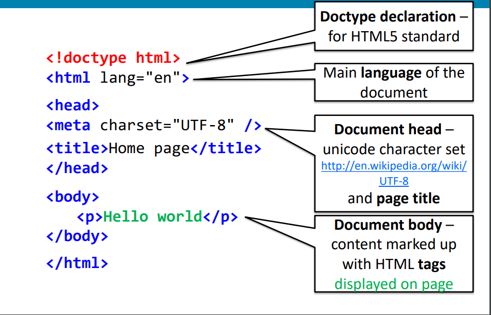Week 2 HTML Markup Basics
This week aims to cover the basics of html markup so the site can begin to be developed with a barebones design.
HTML Markup Tags
- <strong> : Defines important text, not depreciated but possible to do with rich CSS.
- <p> : Defines a paragraph, can just be a setence or any amount of text.
- <center> : Centers text, can be done with rich css.
- <u> : Underlines text, can be done with rich css.
- <font> : Font changes can be done with rich css.
Syntax & Semantics
Syntax is for the format and rules of use, semantics is the meaning of such
As an additional note, document must start with <!doctype html>
Sources
HTML5 doctype, XHTML strict syntax
HTML5 is backwards compatable and has a less strict syntax
For reference in XHTML 1.0 Strict Syntax it was required that:
- Tags must always be closed
- Tags must always be writted in lower case
- Attribute names must always be writted in lower case
- Attribute values must be nested in quotes
- Elements must be correctly nested
These are still good conventions but no longer strictly needed
HTML5 Section Elements
Before HTML5 division tags were used to structure content traditionally as shown as:
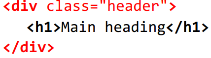However in HTMl5 allows for meaningful page section elements, suchas header, nav, section, article, aside, footer and more. Replacing the old, with:
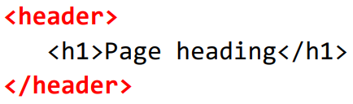Week 3 Document Structure & Hyperlinks
Section Classes (Pre-HTML5)
- Div tags with classes were used for navigation
- Div tags with given IDs for headers were used for a heading at the top of a page
- Div tags with given IDs for footers were used for a footer at the bottom of a page
Section Classes (HTML5)
- nav tag used for navigation
- header tag now exists and is for the header
- footer tag now specifically exists for the footer
- main tag also now exists specifically for main content
Sources
Terminology
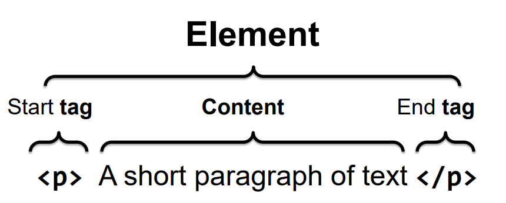Hyper Links
Hyperlinks navigate from one chunk of content to another through links, they can be declared with the a (anchor) tag, in the style <a href="https://link.com"> Text to click to visit the link! </a>
The A tag is used to anchor two seperate but relevant pieces of information, the destination can be many things, such as:
- An Internal Link: Another section of the same page.
- A Local Link: Another page on the same website.
- An External Link: Another website.
- An Email Link: An email address.
Hyperlinks are the essential difference between the web and everything else before (print), this has changed the worlds learning and and information seeking behaviour, partly because it allows for us to follow a trail of links on a topic.
Week 4 Cascading Style Sheets
This week will cover my introduction into cascading style sheets better known as CSS.
CSS is a language that describles the style of an HTML document as well as describing how HTML elements should be displayed - w3schools.com
CSS 3
Using CSS 3 one can more easily style HTML pages in ways that could not previously without having to use JavaScript or digital images, such as:
- border-radius
- Shadows on boxes and text
- Opacity and Transparency
- Decorative Borders
- Importing fonts from the web
- Gradients
- Animations: Transistions and Transforms
Some older browsers will not support CSS3 however while this is not perfect it is not massively problematic because of the fact that the fallback will be mostly acceptable, the site will look a little strange in parts but should still be mostly accessible, so css3 is a fine standard to use.
CSS Now
CSS has now lead to economies in web development and maintenance, allowing for the structure and presentation of content (HTML & CSS) to be seperate, allowing all presentation to be controlled by a seperate CSS sheet(s) which ban be easily changed.
This also allows for accessibility to be greatly improved, allowing different style sheets to be attatched to create different styles upon request when needed for whatever reason they are needed to the user.
Sources
How CSS Works
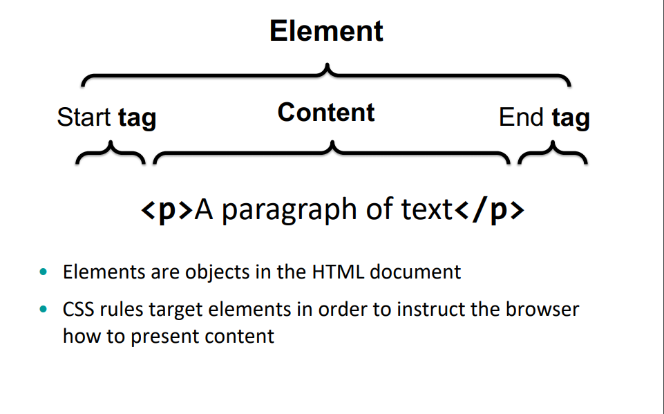Week 5 CSS Box Model & Measurement
The Cascade of Cascading Style Sheets
Styling with css involves finding the most economical and specific way to match an element with a selector to create a desired affect, the cascade of all this determins which rule or rules to apply based on a series of priorities on defined css.
The Box Model
The CSS box model controls how elements are displayed and positioned in a web page, every html element is treated as if it were a box, some elements are block level and take up their own respective space and others are inline level and are nested within a block element, all of which can be nested in sequence or nested within eachother.
The box model is incredibly useful for the development of this site and allows for affecting structuring of the fundamental layout across all pages as well as within the structure of smaller elements neatly.
CSS Units
Absolute Units
- in - Inches
- cm - Centimeters
- mm - Millimeters
- pt - Points (1/72 Inches)
Relative Units
- px - Computer Screen Pixels
- % - Percentage of another value
- rem - Font size of the root elements
- em - Font size of the element
- vw - 1% of viewport width
- vh - 1% of viewport height
Sources
Margin and Padding
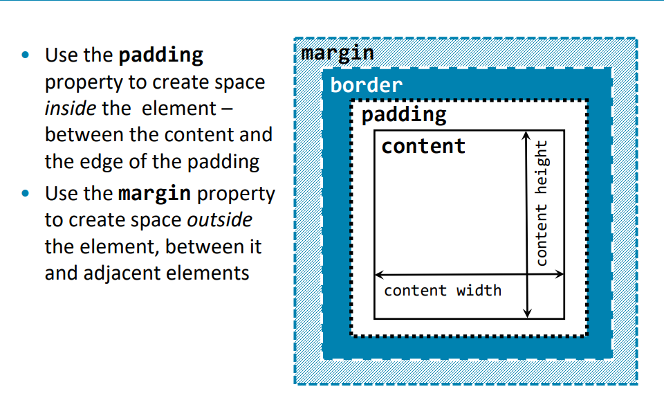Week 6 Responsive Design
Responsive Web Design
The rapid growth in mobile devices on the web has driven a paradigm shift in web development towards this new trend with better support for mobile users. Now, for any web project, one should ask:
- Will the site be accessed by a small screen mobile device?
- Will users access the site by more than one type of device?
- Will users expect the same quality of user experience and content from mobile, table and and desktop web access?
It is important to understand that ultimately web designers and developers have no control over how the end user accesses the web hence it's important to design a user experience that ideally caters for all.
Realistically it's not affordable for businesses to create duplicate websites for desktop and mobile users, with a large number of variables in how to view the site in terms of different devices and perspectives. Hence the logic solution is to create a single site accessible to a range of devices that adapts to the devices accessing it, the standard is generally to build mobile first.
The Three Core Techniques for Responsive Web Design
Fluid Layout
Use responsive units as well as grids, flexbox and multi-column layout.
CSS Media Queries
Detect media, viewport sizes, screen widths etc so you can style elements for devices with different capabilities
Responsive Media
Flexible images for different screen widths as well as flexible media containers for different devices
Sources
The Importance of Mobile Development
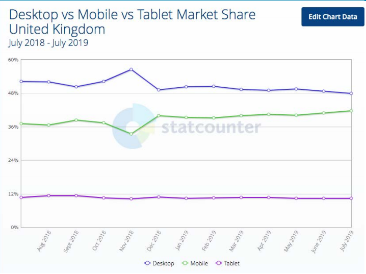Effective Resizing of a Site
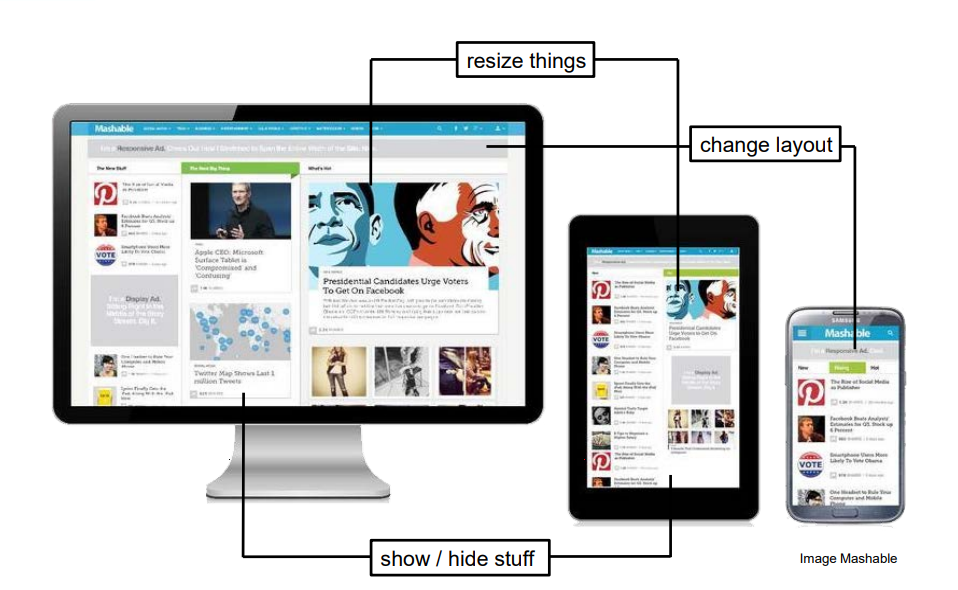Week 7 Flexible Media
Image and Screen Resolution
Digital images on the web are displayed on screens which consist of a grid of pixels, so both vector and bitmap images are displayed as pixels on a computer screen.
Screen resolution refers to the number of pixels displayed per unit of length on the screen, this is usually measured as pixels per inch ppi (dpi), screen resolution depends on the size of the screen plus it's ppi setting.
The size of an image is the number of pixels by the width multiplied by the number of the pixels for the height, measured in dots per inch (dpi). The pixel dimensions of an image is the number of pixels along it's height and with added together; its size in pixels. File size is the size of an image in terms of storage space on the storage medium measured in kilobytes, megabytes or gigabytes, with others in rare cases.
Quality vs File Size
Finding a good balance between excellent quality images and quick page loading is essential, too bad of either will cause your site to drop visitors, compress is generally quite effective at maintaing quality while dramatically reducing file size however it does come at a cost to image quality. Speed is generally given as more important than quality to an extent especially given google takes loading speed into account when indexing pages.
Sources
Quality vs Compression Example
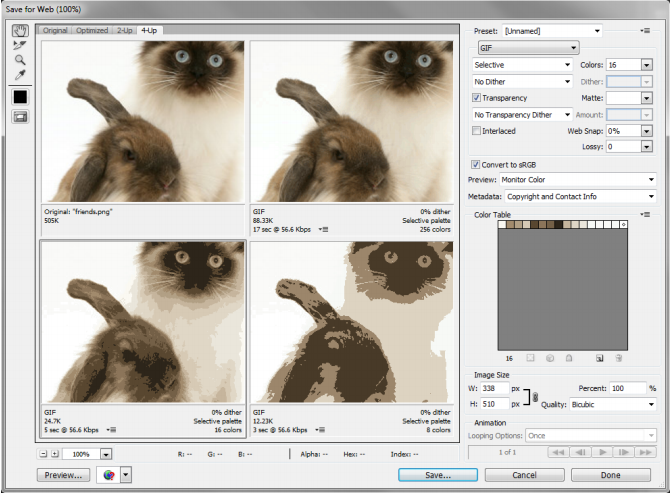Week 8 Responsive Layout
CSS2.1 Layout Properties
Web page content is presented in the normal order in which it is up oin HTML document unless the normal flow is disrupted by CSS declaring laoyout properties. Press-CSS tables were the only option for layout this bad practice persisted long after the advent of CSS in 1998. Earlier versions of CSS did not provide good support for layout CSS2.1 - float clear and position properties are used for layout.
Float, Clear and Position Properties
- float: declares how an element should float, absolutely positioned elements ignore this, elements will float around this so the clear property can be used to avoid this. -w3schools
- position: is used to take an element out of the normal flow of an html document, it can be used relative to its normal flow position, or absolute to the viewport as well fixed in the viewport or sticky.
Sources
Multi-Column Layout
- column-count: defines the number of columns
- column-width: defines the width of each column
- column-gap: defubes the space between columns
- column-rule: defines a border between columns
- column-span: defines an element that spans across columns
- column-fill: defines how the browser will fill the column with content but only applies to each element which have a height property/value
Flexbox Model
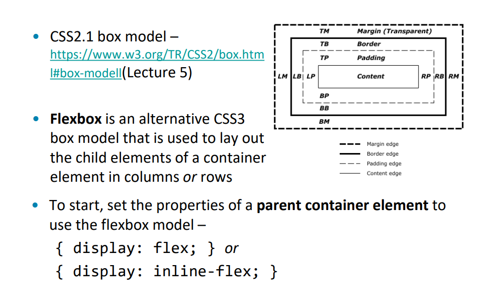Week 9 Forms
The Importance of Forms
Forms are essential for web functionality and interactivity, converting website browsers into customers and contributors, engaging users allowing for registering and contributing content as well as driving web application workflow and collecting data from users, with examples such as e-commeerce: shopping cart, orders and payments, e-gov: vehricle licensing, student finance, blogs: comments, content management etc.
Making Forms Interactive
Scripting languages are needed to make the forms functional, JavaScript can be used to check the accuracy of data entered before it is sent to the user allowing basic checking to be done on the clients end saving the server time effectively. Then server side scripts such as PHP, ASP.NET process the data provided by the user, check it and send back the appropriate response to the user. None of this can be included on this site limited to HTML & CSS, however it is good to know for future developments.
The Standards of a Good Form
- Laid out clearly and logically
- Give clear guidance for use through design
- Have consistent design throughout a website
- Use the correct semantic HTML form elements
- Give feedback to the users while completing the form or upon completion of the form, via client side tools such as JavaScript
Sources
Forms for e-gov

Client Server Application Architecture
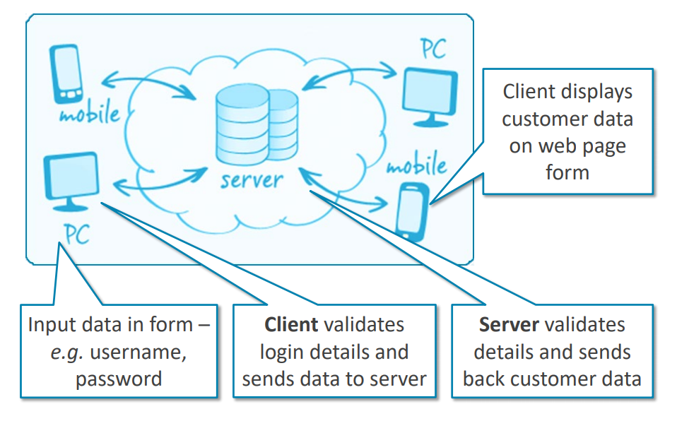Week 10 Grid Layout
The Grid Layout
CSS Grid layout adds a system of horizontal and vertical lines defining columns and rows to CSS which can be used to layout a page or part of a page.
A grid is used to
- Place items into a location on the grid
- Control how items are aligned
- Control overlapping content
A grid can have:
- Fixed width track sizes such as px, em, rem
- Flexible track sizes such as % or fr
Why CSS Grids Are Important
Grids add order continuity and harmony to the presenation of information, as well as helping users to predict where to find information from page to page. Grids also make it easier to add new content to website in a consistent manner, particularly useful in this exact section of the website you're reading. Grids can also facilitate collaboration on the design of a website without compromising the overall vision of the website.
Positioning Content
The grid layout allows you to position content in cells using pure CSS and without altering the HTMl code, the position of an item in the grid is defined by what grid line column or row the content starts ane ends at, this can be expressed using the properties grid-column-start, grid-column-end, grid-row-start and grid-row-end.
Sources
Grid Example
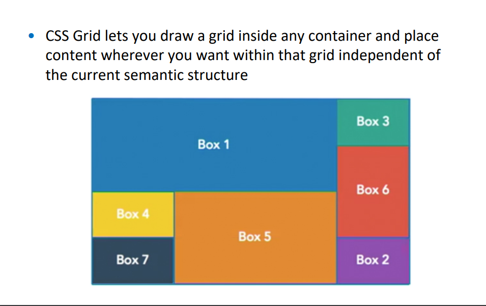CSS Grids vs Flexboxes
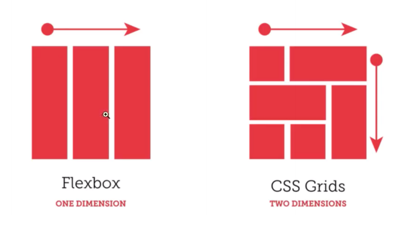Week 11 Additional Site Development
Realistically the content from the other learning weeks allowed for development of the site to commence to a good point, however for a better user experience with better responsiveness, additioanl development was required as well as to circumnavigate the lack of JavaScript for adding features that would traditionally be completed with JavaScript, such as hiding elements on click.
Background Blur Effect
For the background to allow for additional editing the deicision was made to use an online hosted image and apply the blur affect locally, the blur affect details was found on w3schools and the image is linked in the sources section, this creates a colourful affect to match the modern and clean look of the header and footer.
Button Clicking To Hide/Reveal Elements
This was more complicated and makes use of the fact some css elements can target others with buttons triggering radio buttons in turn trigger the display of different content as well as side buttons again adjusting invisible buttons, this is not perfect but with applied animations and a tidy build of this it works quite effectively for the task given, in future JavaScript could complete a simpler affect in a similar fashion.
Sources
{kind=link}
Week 12 Site Evaluation of Technologies
Realistically additional skills were learned for the site in evaluation I feel this was quite successful, in future developments I would like adjust a few things however in my use of css styling.
Grid Layout
Grid Development was learnt for this site to be neat and responsive, however the implimentation in some regards could be a bit cleaner, and more of the grid style could be used from the beginning, ideally it would be good to learn additional skills for grid development, hence work on this was researched for this weeks work
JavaScript
For this website, JavaScript could not be utilised, however for a comparison of effective technologies I compared the JavaScript needed for the same function, which connect the buttons to JavaScript to hide the elements in the same style CSS does, preferable although potentially less versatile despite being much simpler as some users may have JavaScript disabled for privacy but are much less likely to have CSS disabled due to it making most websites near unusable.
Forms
The form on this website is not connected to anything, using it will simply do nothing in real terms, in future development it would be worthwhile to have it do something prehaps log the answers to a database, send a email etc. this however is not possible in this version so does not merit adding if I were to do this site again, but the technology to complete this was worth learning for this week for future work.